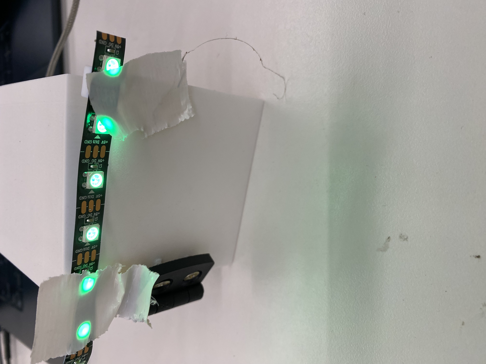
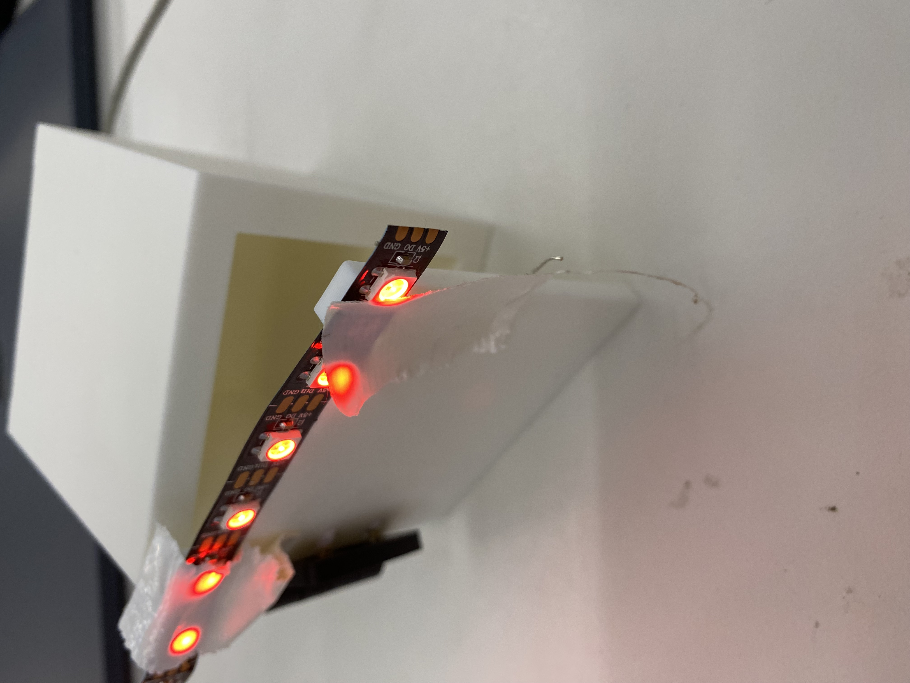
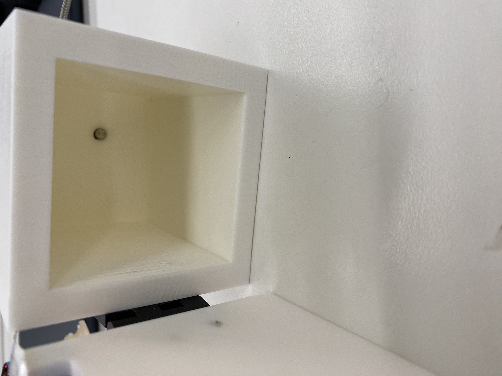
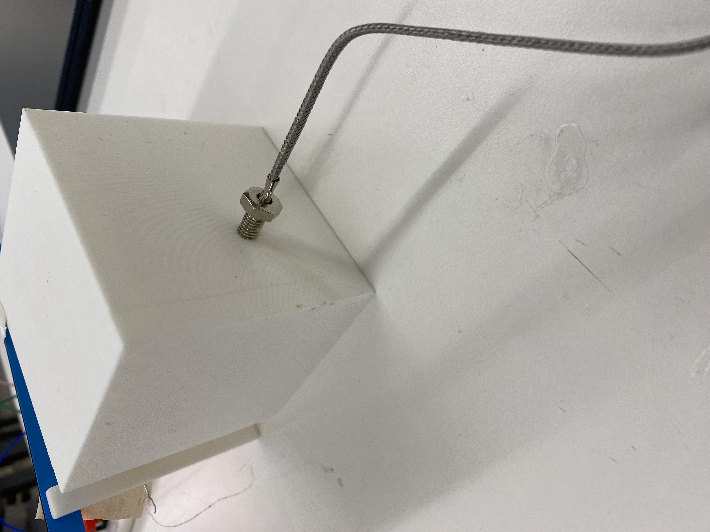
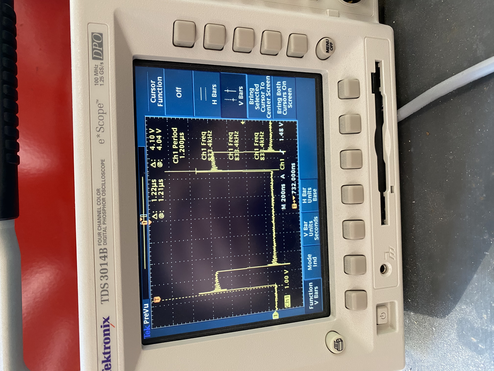

<div class="textcontainer">
<p class="margin"> </p>
<h3>Week 4.1: Electronic Outputs</h3>
<h4>Assignment: Minimum Viable Product for Final Project</h4>
For the minimum viable product (MVP), I created a miniaturized version of the biological incubator. The MVP is comprised of a 3D printed vessel with door hinge, a thermistor, an OLED display, and LED strip. More specifically, the vessel is to showcase where the petri plates could be stored for incubation, the door hinge shows a crude method for isolating the specimens, the thermistor hole provides direct access to the interior of the vessel for real-time temperature readings, the OLED display provides readiability for data interpretation, and the LED strip provides the user knowledge of when the incubator is on or off to ensure safety from hazardous materials.
<br>
<br>
The MVP, shown below, is a crude portrayal of how the final product will function. As you can see, when the door is closed the LED strip shows a green color—which indicates that the incubator is safely incubating organisms. However, when the door is open, the LED strip switches to red to indicated that the door is open and should be closed promply. Furthermore, inside of the incubator is a cut out hole for the thermistor to function as a real-time temperature gauge.
<br>
<br>
In order to incorporate the LED mechanism into the full-scale incubator, I would install the button inside of the door such that the LED emits green when closed (applied pressure on button)and red when open (no pressure on button). In addition, the full-scale model will have a fan installed in the back of the incubator to disperse gas. On the other hand, I need to also install the heating element, which will consist of a heating pad (due to available material in the lab) installed underneath the floor of the incubator in a pocket that is ~1-2mm below. The pocket will provide 2 funcitons: (1) to allow space in the incubator for petri plates, and (2) to heat the incubator in a safe manner without direct contact to the petri plates inside.
<p class="margin"> </p>
<div class="center-colum">




Here is the code for the thermistor component utilizing the millis function
<pre><code class="language-arduino">
#include "max6675.h"
#include Adafruit_GFX.h
#include Adafruit_SSD1306.h
#include Adafruit_Sensor.h
#define SCREEN_WIDTH 128
#define SCREEN_HEIGHT 64
#define OLED_RESET -1
Adafruit_SSD1306 display(OLED_RESET);
//Temperature Sensor and Resistance Calculation
int so = 17;
int cs = 18;
int sck = 19;
float temp = 0;
float R1 = 10000;
float R2, T;
float A = 3.354e-3;
float B = 2.5698e-4;
MAX6675 thermocouple (sck, cs, so);
unsigned long previousTemp = 0;
const long intervalTemp = 1000;
void setup() {
Serial.begin(9600);
display.begin(SSD1306_SWITCHCAPVCC, 0x3c);
delay(2000);
display.clearDisplay();
display.setTextColor(WHITE);
}
void loop() {
unsigned long currentTemp = millis();
if (currentTemp - previousTemp >= intervalTemp){
previousTemp = currentTemp;
}
temp = thermocouple.readCelsius();
R2 = R1 * 1/(4096.0 / (float)temp - 1.0);
T = (1.0 / (A + B*log(R2/R1)));
Serial.println(temp);
Serial.println(T);
//clear display
display.clearDisplay();
//Header text size
display.setTextSize(2);
display.setTextColor(SSD1306_WHITE);
display.setCursor(10, 0);
display.println("Adrian B.");
//Temp text size
display.setTextSize(1);
display.setCursor(5, 20);
display.print("Temperature: ");
display.print(temp);
display.println(" C");
display.display();
}
</code></pre>
<br>
<br>
Here is the code for the LED strip utilizing the millis function
<pre><code class="language-arduino">
#include FastLED.h
#define numLed 10
#define ledPin 16
#define buttonPin 17
CRGB led[numLed];
bool currentColorRed = true;
bool lastButtonState = HIGH;
unsigned long lastDebounceTime = 0;
unsigned long debounceDelay = 50;
void setup(){
Serial.begin(115200);
FastLED.addLeds< WS2812B, ledPin, GRB >(led, numLed);
FastLED.setBrightness(50);
//Setting up button pin
pinMode(buttonPin, INPUT_PULLUP);
//Initial color
fill_solid(led, numLed, CRGB::Red);
}
void loop (){
//Read current button state
int reading = digitalRead(buttonPin);
// Serial.println(reading);
if (reading == LOW){
fill_solid(led, numLed, CRGB:: Green);
}
else{
fill_solid (led, numLed, CRGB::Red);
}
FastLED.show();
}
</code></pre>
I utilized the oscilloscope to measure the time domain that the LED strip is operating from.
<p class="margin"> </p>
<div class="center-colum">

</div>